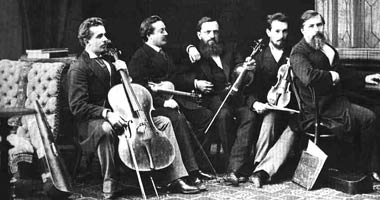

Відлік концертних сезонів Національна філармонія веде з 1863 року, коли було засновано Київське відділення Імператорського Російського Музичного Товариства (IPMT). Вже на початку XIX ст. музичне життя України і Києва бурхливо розвивається. На Київські контрактові ярмарки приїздять з концертами відомі європейські музиканти: Ференц Ліст, брати Венявські та інші. Отже, створення музичного товариства було своєчасним. Серед його організаторів були такі відомі на той час громадські діячі і музиканти, як Р.Пфеніг, М.Лисенко, П.Селецький, М.Богданов.
Культурно-мистецький розвиток Києва кінця XIX ст. відбувається на тлі економічного розвою України. Зростає капітал, з'являються потужні банки. Україна стає батьківщиною цукрових королів, а Київ - великим торгівельним і економічним центром. Заможні люди охоче підтримують мистецтво і не шкодують коштів на його процвітання. Будуються церкви, театри, гарні маєтки. У 1881 році Рада Старійшин Київського Купецького зібрання одержала дозвіл Київської міської Думи на будівництво кам'яного будинку для свого клубу.
Проект і авторський нагляд за будівельними роботами здійснював відомий київський архітектор Володимир Миколайович Ніколаєв, який на той час обіймав посади київського міського і єпархіального архітектора. У 1882 році за один будівельний сезон було зведено двоповерховий будинок Купецького зібрання.
Будинок Купецького зібрання одразу набуває популярності у киян. Тут відбувалися бали-маскаради, сімейні свята, благодійні лотереї, літературні і музичні вечори. Київські музиканти і гастролери, які виступали тут, були в захопленні від акустики залу з колонами. В.Ніколаєв не тільки досконало володів законами акустики як архітектор, але й був людиною музично обдарованою. Через кілька років після будівництва Купецького зібрання академік архітектури В.Ніколаєв став одним із членів Директорату Київського музичного Товариства. Ранки камерної музики, організовані цим товариством на початку дев'яностих років, відбувалися у Купецькому клубі.
З діяльністю Музичного Товариства пов'язано багато славетних імен діячів музичної культури Києва. З 1888 по 1912 рік головою товариства був Олександр Миколайович Виноградський. Він прославився не тільки у Києві, але й у Європі як самобутній диригент симфонічного оркестру. Київська публіка зобов'язана йому знайомством із багатьма симфонічними творами світової класики: Л.Бетховена, П.Чайковського, М.Римського-Корсакова та інших. Він був натхненним організатором і експресивним маестро.
Бурхливо і доволі трагічно ввірвалося у життя ХХ століття. Проте ні в роки Першої світової, ні в роки громадянської війн, ні в період частої зміни влад не зупинялося музичне життя Києва. У ці роки виконувалися твори М.Мусоргського, К.Дебюссі, К.Сен-Санса, інших композиторів. У 1914 році в Києві Симфонічним оркестром Імператорського Російського Музичного Товариства під керуванням Р.Глієра було виконано антракт до четвертої дії опери М.Лисенка "Тарас Бульба". За ці два десятиліття на гастролях побували С.Рахманінов, О.Скрябін, А.Нежданова, Л.Собінов, Ф.Шаляпін та інші.
Купецьке зібрання проіснувало до 1919 року. Потім у його приміщенні розташувався Пролетарський будинок мистецтв. Пізніше - Будинок політичної освіти, потім клуб "Більшовик". А в 30-ті роки - Палац піонерів і жовтенят.
"2-го березня (1923 року) концертом, що відбувся під орудою Л.Штейнберга, благополучно розпочала свою діяльність Держфілармонія", - так пише про подію, що відбулася у колишньому Купецькому зібранні, її очевидець - музичний критик М.Шипович. З 1927 року Державна філармонія працювала у столиці України Харкові, а в 1934 - повернулася до Києва, який знову став столицею. Свого постійного приміщення у цього творчого колективу не було. Концерти і музично-лекторійна робота проходили у різних залах і робочих клубах. У 1937 році при Держфілармонії під керуванням Натана Григоровича Рахліна став працювати Державний симфонічний оркестр.
На початку війни у 1941 році діяльність Київської державної філармонії було припинено, а безцінні архіви спалили за наказом "згори". Під час окупації Києва у будинку колишнього Купецького зібрання розташувався німецький офіцерський клуб. Цей будинок, один із небагатьох, уцілив поблизу зруйнованого Хрещатика.
За генеральним планом повоєнної відбудови Хрещатика і після ретельного обстеження будинку колишнього Купецького зібрання ця історична споруда призначалася під знесення, оскільки знаходилася в аварійному стані. Але будинок не стали руйнувати. Адже кращого приміщення з чудовою акустикою для філармонії годі було й шукати у напівзруйнованому місті. Київська філармонія розпочала тут свою роботу вже у 1944 році.
Колонний зал філармонії має багату і прекрасну історію. Тут давали концерти світові зірки: І.Архипова, Л.Бернстайн, Е.Гілельс, О.Глазунов, К.Зандерлінг, В.Клайберн, Л.Коган, К.Кондрашин, Ф.Ліст, С.Лємєшев, К.Мазур, Г.Нейгауз, Д.Ойстрах, Ю.Орманді, С.Рахманінов, С.Ріхтер, П.Робсон, Г.Рождєстнський, М.Ростропович, А.Рубінштейн, Т.Руффо, Л.Собінов, О.Скрябін, В.Ферреро, А.Хачатурян, К.Цеккі, Ф.Шаляпін. Поряд із ними яскраво сяють імена видатних діячів України: З.Гайдай, О.Гліер, К.Данькевич, М.Лисенко, С.Людкевич, Б.Лятошинський, Г.Майборода, І.Паторжинський, Н.Рахлін, Л.Ревуцький, М.Рильський, К.Сімеонов, С.Турчак, І.Шамо, А.Штогаренко.
Тут співали Український народний хор ім.Г.Верьовки, Капела бандуристів України, тут народився незрівнянний струнний квартет ім.М.Лисенка та відомий Київський камерний оркестр, гастролювали виконавці з багатьох зарубіжних країн. У складі Національної філармонії України працюють відомі художні колективи і видатні митці України.
У 1962 році на відзнаку 120-річчя від дня народження і 50-ї річниці від дня смерті М.Лисенка Колонному залу Київської державної філармонії було присвоєно його ім'я. До 100-річчя з дня побудови Купецького зібрання цьому будинку надано статус пам'ятки архітектури. Вісімдесяті роки були найтяжчими в історії філармонії. У цей період сталося кілька важких аварій. Одна з них затопила підвали. Пропали архіви і одна з найкращих нотних бібліотек у Києві.
Косметичні ремонти вже не допомагали. Філармонію треба було негайно рятувати. І, нарешті, дякуючи наполегливості директора філармонії Д.Остапенка, реставрація почалась. Роботи по реставрації і реконструкції доручили здійснити Міністерству культури і Київському міськвиконкому. Проектом було передбачено відновити історичну структуру пам'ятки архітектури, зберегти акустичні властивості Колонного залу, встановити сучасне інженерне устаткування, а саме: пульт режисерського управління, новітню звукозаписувальну апаратуру, службову телекомунікаційну систему, обладнання для постановчого освітлення та механізації сцени тощо.
У грудні 1996 року відбудований Колонний зал імені М.В.Лbсенка був знову відкритий для публіки.
Враховуючи багатогранну творчу діяльність колективу, значний внесок у розвиток українського музичного мистецтва Київський державній філармонії у жовтні 1994 року Указом Президента України було надано статус Національної філармонії України.